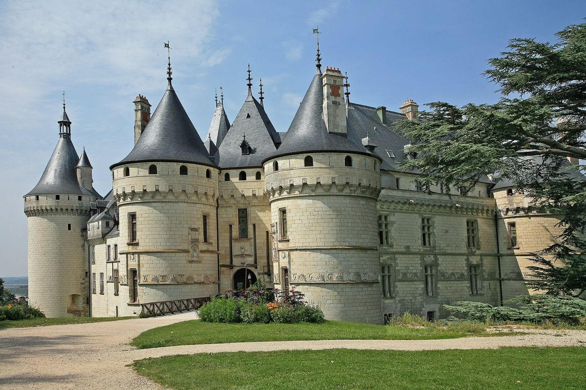
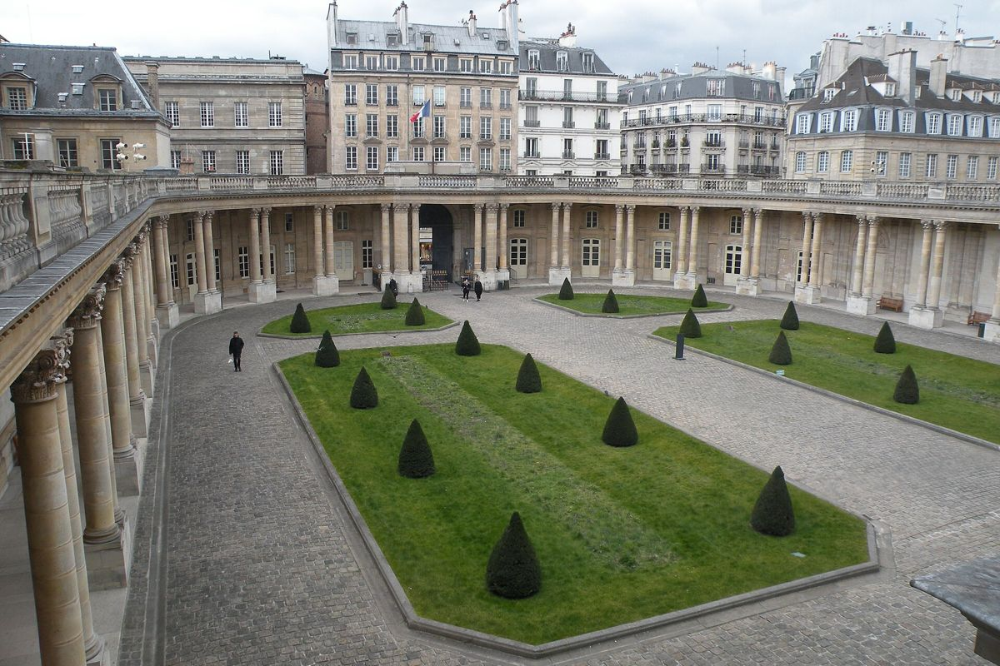
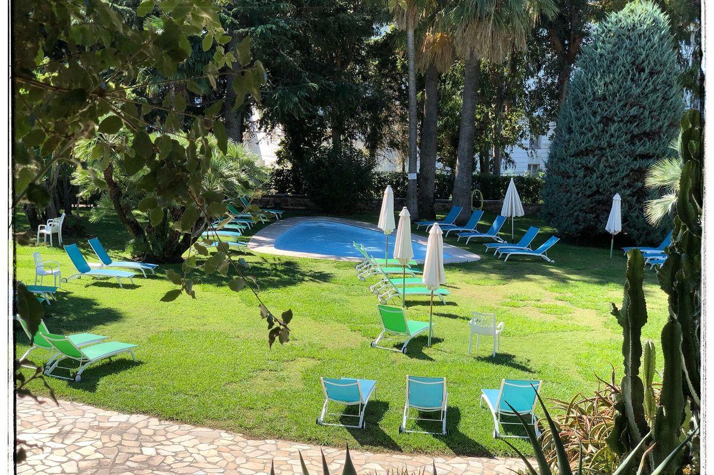
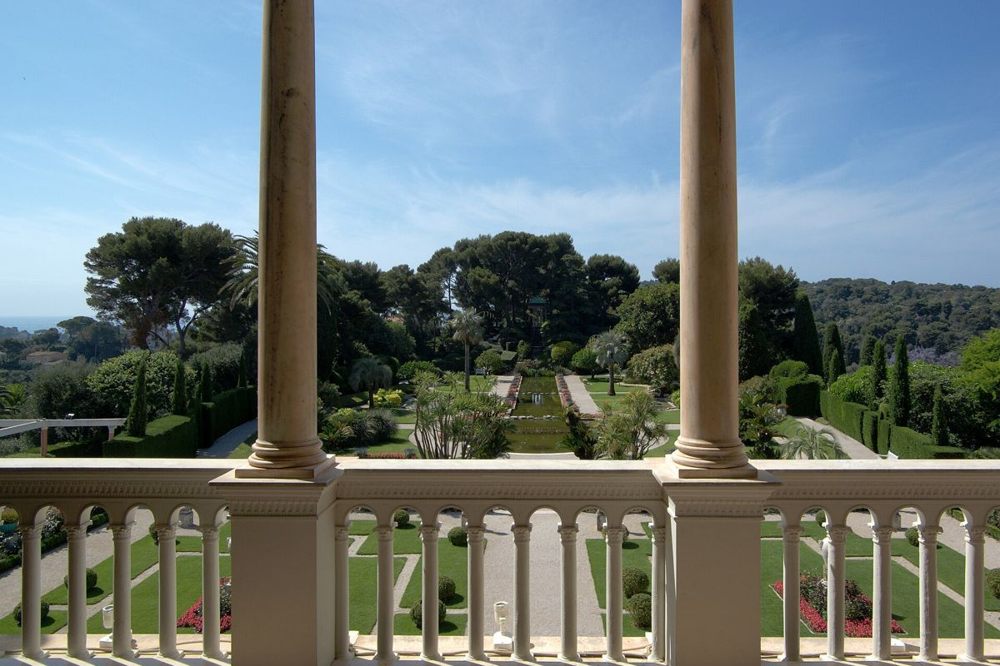

Châteaux, hôtels particuliers, villas et appartements d’exception, présentés par les meilleures agences.
2 140 biens à plus de 1,5 M€ en France cette semaine



Marché, architecture et art de vivre
Prix médian des biens à plus de 1,5 M€, d’après les annonces du réseau